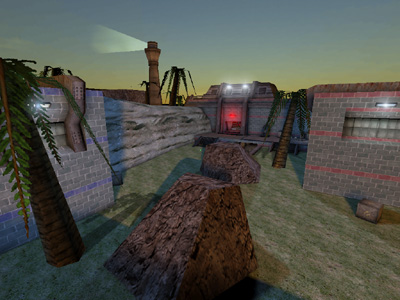

Mapping For Jailbreak/Jails
Jails
Is this game ever going to end? Camper!
You should always design or at least think about Jail placement right from the start when designing a map. Placement of jails can be the deciding factor on whether a map rocks… or sucks.
There has been a lot of debate on whether Jails should be in the enemy base, in your base or in the middle. Personally, if I had to choose, my first choice would definitely be that jails should be in the middle if possible. My second choice would be for you to be jailed in your own base –- even though this of course doesn't make sense (why would the enemy jail you in your own base?), in most cases it just produces better gameplay… and we have to remember that it is a “Tournament” after all, so the teams jail their opposition wherever the hell the Tournament sponsors tell them to! But please remember all of these three scenarios can work, under different circumstances... but regardless of what jail placement is chosen, released players should always have a safe passage back to their own base. The benefits of each type of jail setup are explained below.
Option 1: Jailed in the enemy base (JB-IndusRage2 – JB2003/2004)
This is my least preferred layout, but it can work if the map is not too large. A huge map that has a long distance between switches is not suitable for this setup because it causes the infamous “base-switching” and release-switch-camping, which leads to a long, drawn-out game, with the match often tied at the end. The reason this is not so bad in a smaller map is because players can do the obvious and counteract the base-switching by heading back to their own base to defend. This can actually be a really cool challenge to see if you can break the cycle by yourself On large maps the player would have to run miles to get back to their own base to counter the base-switching, and then probably get killed at the end of it. Not good. |

JB-Alcatraz (UTJB) – A good map but sometimes ruined by "base-switching". |
Option 2: Jailed in the centre of the map (JB-CastleBreak, JB-Heights – JB2003/2004)
This is my preferred option because it is the ultimate compromise between the two other types of jail placement, and it gives players the choice of what they want to do. They can head back into their own base and load up or defend –- or they can risk entering the enemy base straight from jail. Players should have a safe passage back to their own base and it is preferable that it is made risky for them to head straight into the enemy base from there (e.g. a weak weapon made available on the way or a dangerous area to go through). |
![[jailbreak-mapping-jails-2-castlebreak]](images/jailbreak-mapping-jails-2-c.jpeg) JB-Castlebreak is an example of jails in the centre of the map. |
Option 3: Jailed in your own base (JB-Cavern – JB2003/2004)
Sometimes it is not suitable for jails to be in the enemy base, and you have designed your map already and decided that the jails don't belong in the centre either. This is where you can put the jails in your own base. It is the unrealistic option but it means players have a safe passage to their own base and avoids base-switching and release-switch-camping because there is always a good flood of released players to over-power the hostile enemy. |
![[jailbreak-mapping-jails-3-cavern]](images/jailbreak-mapping-jails-3-c.jpeg) JB-Cavern is an example of jails in your own base. |
Hopefully this wee explanation here clears it up so you can choose the right jail placement to suit your map... 
Previous: /General Layout – Next: /Weapon Availability